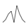
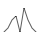
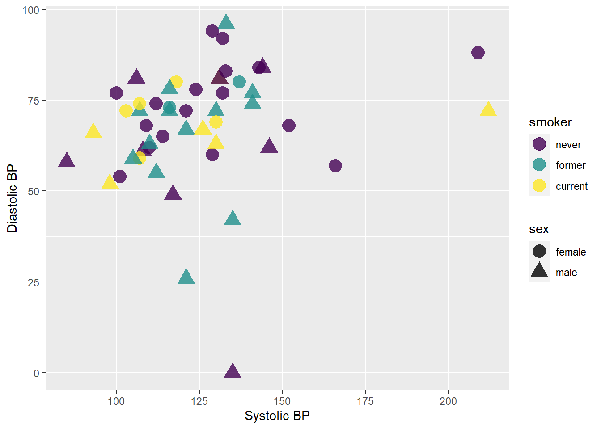

Topic 2 Intro to Data Visualization
Learning Goals
- Understand the Grammar of Graphics
- Use ggplot2 to create basic layers of graphics
- Understand the different basic univariate visualizations for categorical and quantiative variables
Benefits of Visualizations
- Visualizations help us understand what we’re working with: What are the scales of our variables? Are there any outliers, i.e. unusual cases? What are the patterns among our variables?
- This understanding will inform our next steps: What method of analysis / model is appropriate?
- Once our analysis is complete, visualizations are a powerful way to communicate our findings and tell a story.


Data Glyph
A data glyph is also a mark, e.g.


 
 

The features of a data glyph encodes the value of variables.
- Some are very simple, e.g. a dot:
- Some combine different elements, e.g. a pointrange:
- Some are complicated, e.g. a dotplot:
Components of Graphics
Figure 2.1: Blood pressure readings from a random subset of the NHANES data set.
- frame: The position scale describing how data are mapped to x and y
- glyph: The basic graphical unit that represents one case.
- other terms used include mark and symbol.
- aesthetic: a visual property of a glyph such as position, size, shape, color, etc.
- may be mapped based on data values:
smoker -> color - may be set to particular non-data related values:
color is black
- may be mapped based on data values:
- facet: a subplot that shows one subset of the data
- rather than represent
sexby shape, we could split into two subplots
- rather than represent
- scale: A mapping that translates data values into aesthetics.
- example: never-> pink; former-> aqua; current-> green
- guide: An indication for the human viewer of the scale. This allows the viewer
to translate aesthetics back into data values.
- examples: x- and y-axes, various sorts of legends
Eye Training for the Layered Grammar of Graphics
Exercise 2.1 (Basic questions to ask of a data graphic) For your assigned graphic, discuss the following seven questions with your partner(s):
- What variables constitute the frame?
- What glyphs are used?
- What are the aesthetics for those glyphs?
- Which variable is mapped to each aesthetic?
- Which variable, if any, is used for faceting?
- Which scales are displayed with a guide?
- What raw data would be required for this plot, and what form should it be in?
Here are the graphics examples, all taken from the New York Times website:
Glyph-Ready Data
Note the mapping of data to aesthetics for Figure 2.1:
sbp [Systolic Blood Pressure] -> x
dbp [Diastolic Blood Pressure] -> y
smoker -> color
sex -> shapeGlyph-ready data has this form:
- There is one row for each glyph to be drawn.
- The variables in that row are mapped to aesthetics of the glyph (including position).
| sbp | dbp | sex | smoker |
|---|---|---|---|
| 112 | 55 | male | former |
| 144 | 84 | male | never |
| 143 | 84 | female | never |
| 110 | 62 | female | never |
| 121 | 72 | female | never |
| 129 | 60 | female | never |
Layers – Building up Complex Plots
Using the ggplot2 package, we can create graphics by building up layers, each of which may have its own data, glyphs, aesthetic mapping, etc. As an example, let’s peel back the layers used to create Figure 2.1.
The first layer just identifies the data set. It sets up a blank canvas, but does not actually plot anything:
ggplot(data = Tmp)
Next, we add a geometry layer to identify the mapping of data to aesthetics for each of the glyphs:
ggplot(data = Tmp) +
geom_point(mapping = aes(x = sbp, y = dbp, shape = sex, color = smoker), size = 5, alpha = .8)
Next, we can add some axes labels as guides:
ggplot(data = Tmp) +
geom_point(mapping = aes(x = sbp, y = dbp, shape = sex, color = smoker), size = 5, alpha = .8) +
xlab("Systolic BP") + ylab("Diastolic BP")
And, finally, we can change the scale of the color used for smoker status:
ggplot(data = Tmp) +
geom_point(mapping = aes(x = sbp, y = dbp, shape = sex, color = smoker), size = 5, alpha = .8) +
xlab("Systolic BP") + ylab("Diastolic BP") +
scale_color_manual(values = c("#F8766D", "#00BFC4", "#00BA38"))
If instead we wanted to facet into columns based on smoker status, we could add another layer for that:
ggplot(data = Tmp) +
geom_point(mapping = aes(x = sbp, y = dbp, shape = sex, color = smoker), size = 5, alpha = .8) +
xlab("Systolic BP") + ylab("Diastolic BP") +
scale_color_manual(values = c("#F8766D", "#00BFC4", "#00BA38")) +
facet_grid(. ~ smoker)
For more information on all of the different types of layers we can add to graphics, see the ggplot2 reference page and the data visualization with ggplot2 cheat sheet.
Good vs. Bad Graphics
Important note: So far we have just discussed the layered grammar of graphics in order to understand how graphics are created in R. We have not touched at all on what makes for effective graphics, or how graphics are perceived by humans.
Data Visualization Workflow + ggplot
There’s no end to the number and type of visualizations you could make. Thus the process can feel overwhelming. FlowingData makes good recommendations for data viz workflow:
- Ask the data questions. Simple research questions will guide the types of visualizations that you should construct.
- Start with the basics and work incrementally. Before constructing complicated or multivariate or interactive graphics, start with simple visualizations. An understanding of the simple patterns provides a foundation upon which to build more advanced analyses and visualizations. This incremental process works particularly well with the layered grammar of graphics in
ggplot. - Focus. Reporting a large number of visualizations can overwhelm the audience and obscure your conclusions. Instead, pick out a focused yet comprehensive set of visualizations. Here is an example of one dataset visualized 25 different ways, each with a different focus and interpretation, and what can happen if you let the data ramble on without a focus.
In this course we’ll largely construct visualizations using the ggplot function in RStudio. Though the ggplot learning curve can be steep, its “grammar” is intuitive and generalizable once mastered. The ggplot plotting function is stored in the ggplot2 package:
library(ggplot2)The best way to learn about ggplot is to just play around. Focus on the patterns and potential of their application. It will be helpful to have the RStudio Data Visualization cheat sheet handy as you complete this activity.
Getting Started
The “Bechdel test”, named after cartoonist Alison Bechdel, tests whether movies meet the following criteria:
- There are \(\ge\) 2 (named) female characters;
- these women talk to each other…
- about something other than a man.
In the fivethirtyeight.com article “The Dollar-And-Cents Case Against Hollywood’s Exclusion of Women”, the authors analyze which Hollywood movies do/don’t pass the test. Their data are available in the fivethirtyeight package:
library(fivethirtyeight)
data(bechdel)
head(bechdel)| year | imdb | title | clean_test | binary | budget_2013 | domgross_2013 | intgross_2013 |
|---|---|---|---|---|---|---|---|
| 2013 | tt1711425 | 21 & Over | notalk | FAIL | 13000000 | 25682380 | 42195766 |
| 2012 | tt1343727 | Dredd 3D | ok | PASS | 45658735 | 13611086 | 41467257 |
| 2013 | tt2024544 | 12 Years a Slave | notalk | FAIL | 20000000 | 53107035 | 158607035 |
| 2013 | tt1272878 | 2 Guns | notalk | FAIL | 61000000 | 75612460 | 132493015 |
| 2013 | tt0453562 | 42 | men | FAIL | 40000000 | 95020213 | 95020213 |
| 2013 | tt1335975 | 47 Ronin | men | FAIL | 225000000 | 38362475 | 145803842 |
Exercise 2.2 Before diving into any visualizations of these data, we first must understand its structure and contents. Discuss the following:
- What are the units of observation and how many units are in this sample?
- What are the levels of the
clean_testandbinaryvariables?
- Check out the codebook for
bechdel(?bechdel). What’s the difference betweendomgross_2013anddomgross?
Exercise 2.3 We’ll consider univariate visualizations of the clean_test and budget_2013 variables. Discuss the following:
- What features would we like a visualization of the categorical
clean_testvariable to capture?
- What features would we like a visualization of the quantitative
budget_2013variable to capture?
Categorical univariate visualization
We begin by stating a clear research question:
Among the movies in our sample, what fraction pass the Bechdel test? Among those that fail the test, in which way do they fail (e.g., there are no women, there are women but they only talk about men,…)?
To answer the above research question, we can explore the categorical clean_test variable. A table provides a simple summary of the number of movies that fall into each clean_test category:
table(bechdel$clean_test)##
## nowomen notalk men dubious
## 141 514 194 142
## ok
## 803Exercise 2.4 Examine the table of clean_test data, and try to interpret it. What insights does it provide about the original research question?
Because clean_test is a categorical variable, a bar chart provides an appropriate visualization of this table. In examining the bar chart, keep your eyes on the following.
- variability: Are cases evenly spread out among the categories or are some categories more common than others?
- contextual implications: In the context of your research, what do you learn from the bar chart? How would you describe your findings to a broad audience?
Exercise 2.5 Try out the code below that builds up from a simple to a customized bar chart. At each step determine how each piece of code contributes to the plot.
# plot 1: set up a plotting frame (a blank canvas)
ggplot(bechdel, aes(x = clean_test))
# plot 2: what changed / how did we change it?
ggplot(bechdel, aes(x = clean_test)) +
geom_bar()
# plot 3: what changed / how did we change it?
ggplot(bechdel, aes(x = clean_test)) +
geom_bar() +
labs(x = "Outcome of Bechdel Test", y = "Number of movies")
# plot 4: what changed / how did we change it?
ggplot(bechdel, aes(x = clean_test)) +
geom_bar(color = "purple") +
labs(x = "Outcome of Bechdel Test", y = "Number of movies")
# plot 5: what changed / how did we change it?
ggplot(bechdel, aes(x = clean_test)) +
geom_bar(fill = "purple") +
labs(x = "Outcome of Bechdel Test", y = "Number of movies")Exercise 2.6 Summarize the visualization: what did you learn about the distribution of the clean_test variable?
Exercise 2.7 Let’s return to our research question: What percent of movies in the sample pass the Bechdel test? Among those that fail the test, in which way do they fail?
Quantitative univariate visualization
To motivate quantitative visualizations, consider a second research question
Among the movies in our sample, what’s the range of budgets? What’s the typical budget? The largest/smallest?
We can answer the above research question by exploring the quantitative budget_2013 variable. Quantitative variables require different summary tools than categorical variables. We’ll explore two methods for graphing quantitative variables: histograms and density plots. Both of these has strengths/weaknesses in helping us visualize the distribution of observed values.
In their examination, keep your eyes on the following.
- center: Where’s the center of the distribution? What’s a typical value of the variable?
- variability: How spread out are the values? A lot or a little?
- shape: How are values distributed along the observed range? Is the distribution symmetric, right-skewed, left-skewed, bi-modal, or uniform (flat)?
- outliers: Are there any outliers, ie. values that are unusually large/small relative to the bulk of other values?
- contextual implications: Interpret these features in the context of your research. How would you describe your findings to a broad audience?
Histograms
Histograms are constructed by (1) dividing up the observed range of the variable into ‘bins’ of equal width; and (2) counting up the number of cases that fall into each bin.
Exercise 2.8 Try out the code below. At each step determine how each piece of code contributes to the plot.
# plot 1: set up a plotting frame
ggplot(bechdel, aes(x = budget_2013))
# plot 2: what changed / how did we change it?
ggplot(bechdel, aes(x = budget_2013)) +
geom_histogram()
# plot 3: what changed / how did we change it?
ggplot(bechdel, aes(x = budget_2013)) +
geom_histogram() +
labs(x = "Budget ($)", y = "Number of movies")
# plot 4: what changed / how did we change it?
ggplot(bechdel, aes(x = budget_2013)) +
geom_histogram(color = "white") +
labs(x = "Budget ($)", y = "Number of movies")
# plot 5: what changed / how did we change it?
ggplot(bechdel, aes(x = budget_2013)) +
geom_histogram(fill = "white") +
labs(x = "Budget ($)", y = "Number of movies")
# plot 6: what changed / how did we change it?
ggplot(bechdel, aes(x = budget_2013)) +
geom_histogram(color = "white", binwidth = 500000) +
labs(x = "Budget ($)", y = "Number of movies")
# plot 7: what changed / how did we change it?
ggplot(bechdel, aes(x = budget_2013)) +
geom_histogram(color = "white", binwidth = 200000000) +
labs(x = "Budget ($)", y = "Number of movies")Exercise 2.9 Summarize the visualizations.
- Describe the problem in choosing a bin width that’s not too wide and not too narrow, but just right.
- What did you learn about the distribution of the
budget_2013variable?
- Why does adding
color = "white"improve the visualization?
Density plots
Density plots are essentially smooth versions of the histogram. Instead of sorting cases into discrete bins, the “density” of cases is calculated across the entire range of values. The greater the number of cases, the greater the density! The density is then scaled so that the area under the density curve always equals 1 and the area under any fraction of the curve represents the fraction of cases that lie in that range.
Exercise 2.10 Try the following code and assess what each line does.
# plot 1: set up the plotting frame
ggplot(bechdel, aes(x = budget_2013))
# plot 2: what changed / how did we change it?
ggplot(bechdel, aes(x = budget_2013)) +
geom_density()
# plot 3: what changed / how did we change it?
ggplot(bechdel, aes(x = budget_2013)) +
geom_density() +
labs(x = "Budget ($)")
# plot 4: what changed / how did we change it?
ggplot(bechdel, aes(x = budget_2013)) +
geom_density(color = "red") +
labs(x = "Budget ($)")
# plot 5: what changed / how did we change it?
ggplot(bechdel, aes(x = budget_2013)) +
geom_density(fill = "red") +
labs(x = "Budget ($)")Exercise 2.11 The histogram and density plot both allow us to visualize the distribution of a quantitative variable. What are the pros/cons of each? Discuss.
Additional exercises
Exercise 2.12 In July 2016, fivethirtyeight.com published the article “Hip-Hop is Turning on Donald Trump””. You can find the supporting data table hiphop_cand_lyrics in the fivethirtyeight package:
library(fivethirtyeight)
data("hiphop_cand_lyrics")- What are the cases in this data set?
- Use RStudio functions to:
- summarize the number of cases in
hiphop_cand_lyrics
- examine the first cases of
hiphop_cand_lyrics
- list out the names of all variables in
hiphop_cand_lyrics
Exercise 2.13 Let’s start our investigation of hip hop data by asking “Who?”; that is, let’s identify patterns in which 2016 presidential candidates popped up in hip hop lyrics.
- Use an RStudio function to determine the category labels used for the
candidatevariable.
- Use
tableto construct a table of the number of cases that fall into eachcandidatecategory.
- Construct a single plot that allows you to investigate the prevalence of each candidate in hip hop. Make the following modifications:
- change the axis labels
- change the fill colors
- Summarize your findings about the 2016 candidates in hip hop.
Exercise 2.14 Next, consider the release dates of the hip hop songs.
- Construct a histogram of the release dates with the following modifications:
- change the fill color of the bins
- change the bin width to a meaningful size
- Construct a density plot of the release dates with the following modifications:
- change the fill color
- Summarize your findings about release date
Exercise 2.15 No class will teach you everything you need to know about RStudio or programming in general. Thus, being able to find help online is an important skill. To this end, make a single visualization that incorporates the following modifications to your density plot from above. This will require a little Googling and/or use of the visualization cheat sheet.
- Add a title or caption.
- Add transparency to the fill color.
- Calculate the mean (ie. average) release date and median release date:
mean(hiphop_cand_lyrics$album_release_date)
median(hiphop_cand_lyrics$album_release_date)Add two vertical lines to your plot: one representing the mean and the other representing the median. Use two different colors and/or line types.
- Change the limits of the x-axis to range from 1980-2020.